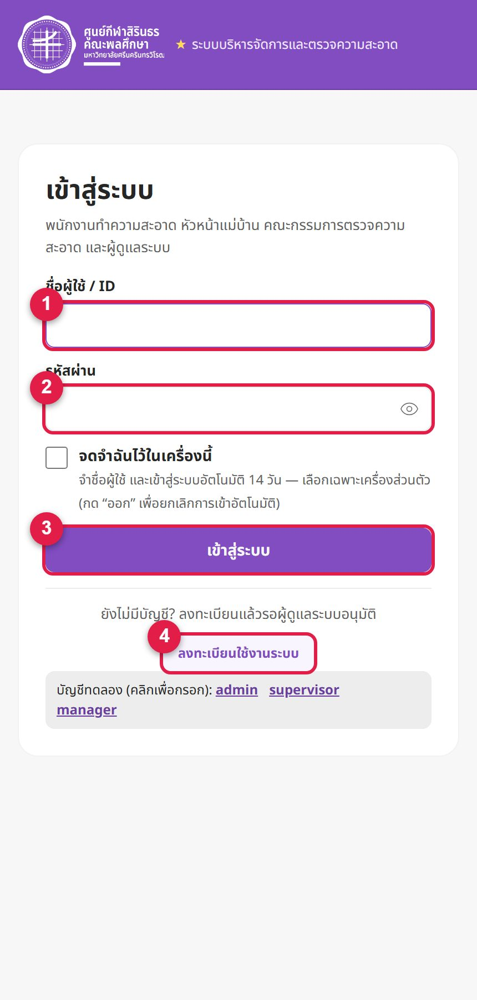
1
เปิดหน้าเข้าสู่ระบบ
เปิดเว็บของระบบ จะเจอหน้า เข้าสู่ระบบ ผู้ที่ยังไม่มีบัญชีให้กดปุ่ม 4 ลงทะเบียนใช้งานระบบ
มีบัญชีแล้ว? กรอก ID 1 และรหัสผ่าน 2 แล้วกด 3 เข้าสู่ระบบ

ศูนย์กีฬาสิรินธร มหาวิทยาลัยศรีนครินทรวิโรฒ · ทำตามทีละขั้น พร้อมภาพหน้าจอจริงของระบบ
ใช้ได้ทั้งบนมือถือและคอมพิวเตอร์ ผ่านเว็บเบราว์เซอร์
ใช้ตรวจความสะอาดของ 12 พื้นที่ ในศูนย์กีฬาสิรินธร ทุกวัน — พนักงานทำความสะอาดติ๊กรายการและถ่ายรูปส่งรายงาน หัวหน้าแม่บ้านตรวจผ่านหรือตีกลับให้แก้ไข และคณะกรรมการแจ้งจุดที่ควรปรับปรุง ทุกขั้นตอนมีประวัติและรูปเป็นหลักฐาน
ทำเช็คลิสต์ แนบรูป ส่งรายงาน และตอบกลับเมื่อถูกแจ้งแก้ไข
ตรวจงาน — ผ่าน (จบงาน) หรือตีกลับให้แก้ไข
แจ้งจุดที่ควรปรับปรุง พร้อมรูปและคะแนนดาว
อนุมัติบัญชี จัดการสิทธิ์ ดูแดชบอร์ดและรายงาน (ไม่อยู่ในคู่มือนี้)
เมื่อหัวหน้าตรวจผ่าน งานของพื้นที่นั้นสิ้นสุดทันที · งานเริ่มใหม่ทุกวัน

เปิดเว็บของระบบ จะเจอหน้า เข้าสู่ระบบ ผู้ที่ยังไม่มีบัญชีให้กดปุ่ม 4 ลงทะเบียนใช้งานระบบ
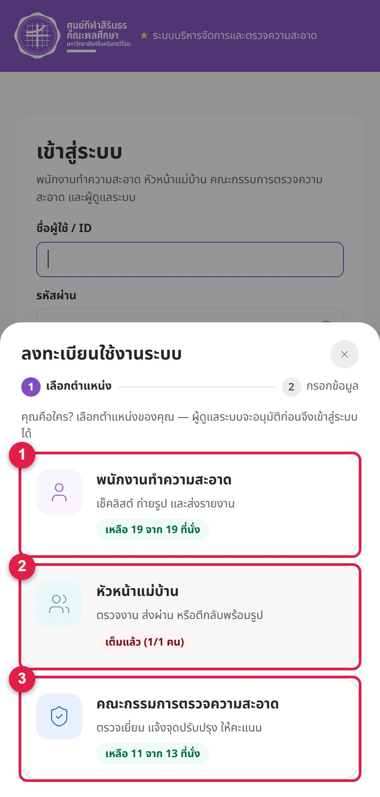
ระบบมี 3 ตำแหน่งให้เลือก แต่ละตำแหน่งแสดงจำนวนที่นั่งที่เหลือ
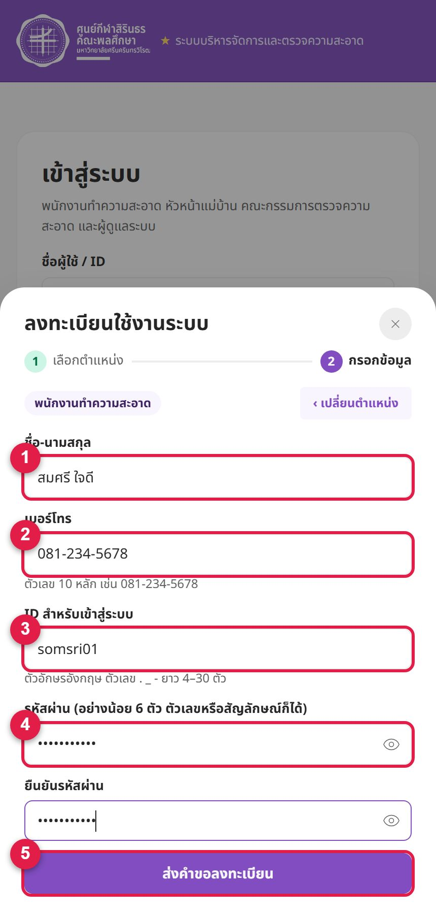
จากนั้นกด 5 ส่งคำขอลงทะเบียน
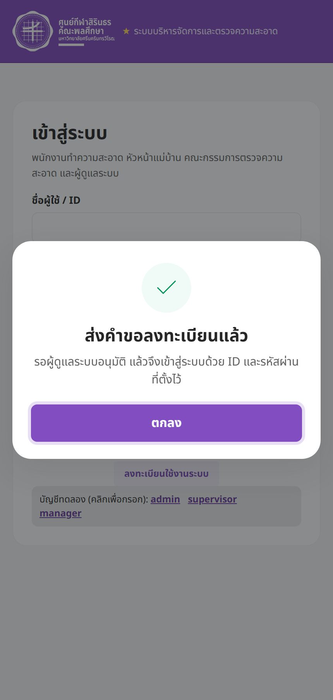
เมื่อเห็นข้อความ “ส่งคำขอลงทะเบียนแล้ว” ให้กด ตกลง แล้วรอผู้ดูแลระบบอนุมัติบัญชี
เมื่ออนุมัติแล้ว กลับมาเข้าสู่ระบบด้วย ID และรหัสผ่านที่ตั้งไว้ ระบบจะพาเข้าหน้าของตำแหน่งคุณโดยอัตโนมัติ
ทำเช็คลิสต์ แนบรูป ส่งรายงานให้หัวหน้าตรวจ
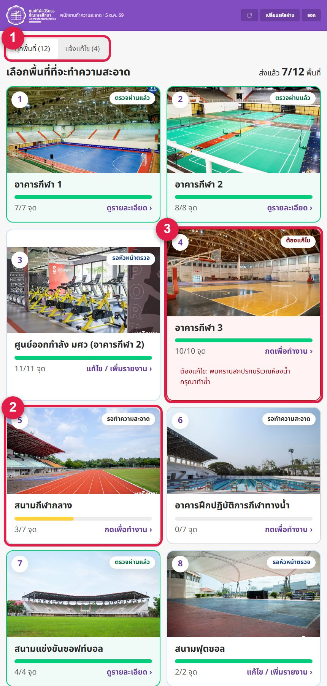
หลังเข้าสู่ระบบจะเห็นการ์ดพื้นที่ทั้ง 12 แห่ง ดูป้ายสถานะมุมการ์ด
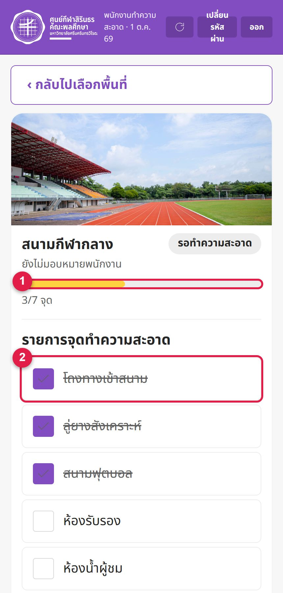
หน้าพื้นที่แสดง 1 แถบความคืบหน้า (เช่น 2/7 จุด) และ 2 รายการจุดที่ต้องทำความสะอาด
กดปุ่ม ‹ กลับไปเลือกพื้นที่ ได้ทุกเมื่อ ข้อมูลที่ติ๊กไว้ไม่หาย
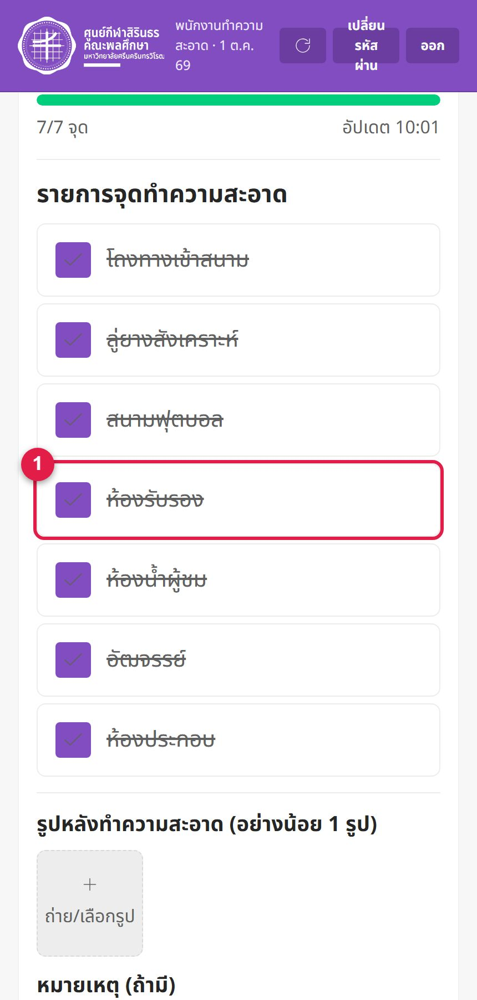
ทำความสะอาดแต่ละจุดเสร็จแล้ว กดที่รายการนั้น 1 จะขึ้นเครื่องหมายถูกและขีดฆ่าข้อความ
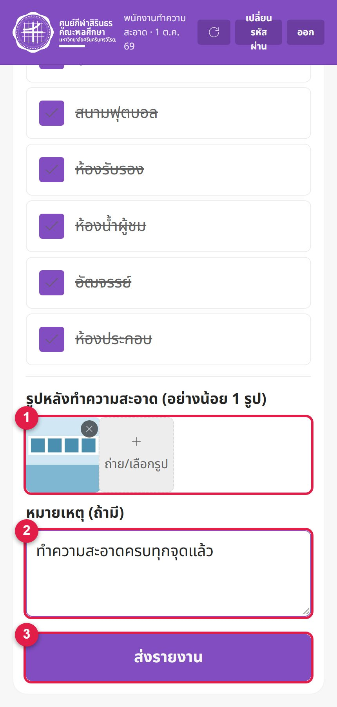
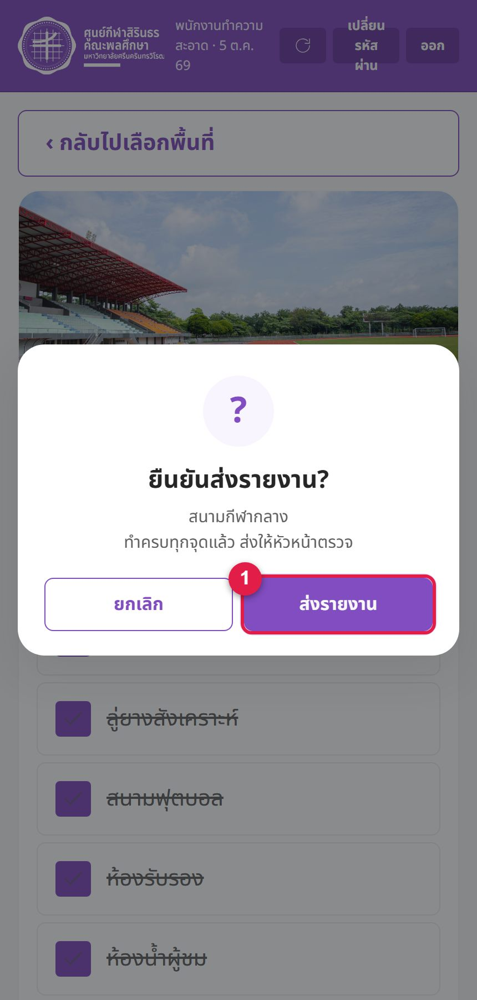
ระบบถามยืนยัน — กด 1 ส่งรายงาน เพื่อส่ง หรือ ยกเลิก เพื่อกลับไปแก้
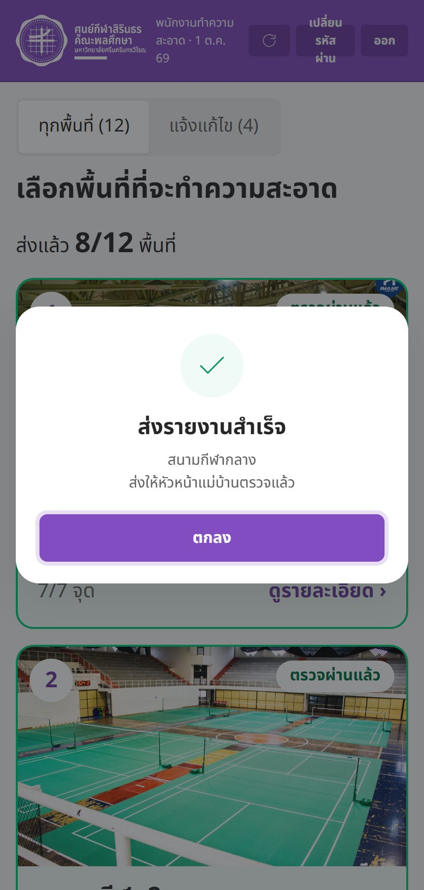
เมื่อขึ้น “ส่งรายงานสำเร็จ” กด ตกลง พื้นที่นั้นจะเปลี่ยนเป็น รอหัวหน้าตรวจ แล้วเลือกพื้นที่ถัดไปทำต่อได้เลย
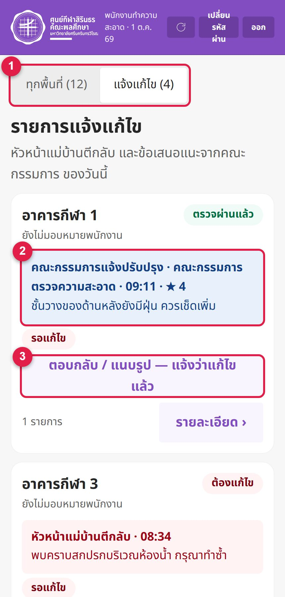
แท็บ 1 แจ้งแก้ไข (n) รวมงานที่ต้องแก้ไข
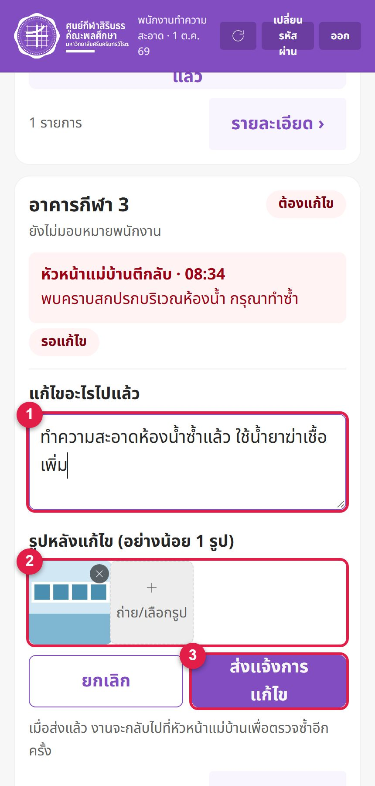
ตรวจงานที่พนักงานส่ง — ผ่านหรือตีกลับ
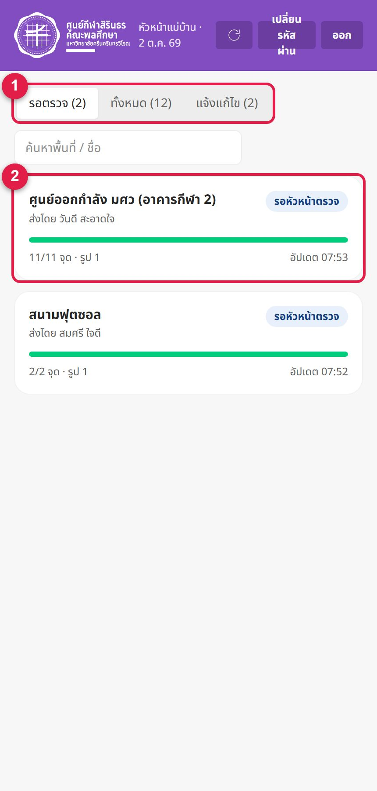
เข้าสู่ระบบแล้วจะอยู่ที่แท็บ 1 รอตรวจ (ตัวเลขคือจำนวนงานที่รอ)
กดการ์ดพื้นที่ 2 เพื่อเปิดดูรายละเอียด — ใต้ชื่อพื้นที่จะแสดง ส่งโดย ชื่อพนักงาน ผู้ส่งรายงาน (แม่บ้านเวียนพื้นที่ทำงาน)
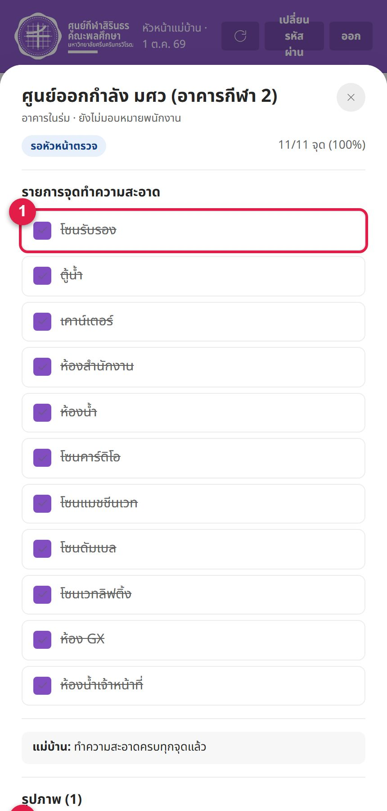
หน้าต่างรายละเอียดแสดง 1 รายการที่ติ๊กครบหรือไม่ หมายเหตุของพนักงาน 2 รูปที่ถ่ายส่ง และประวัติวันนี้ — เลื่อนลงเพื่อดูให้ครบก่อนตัดสิน
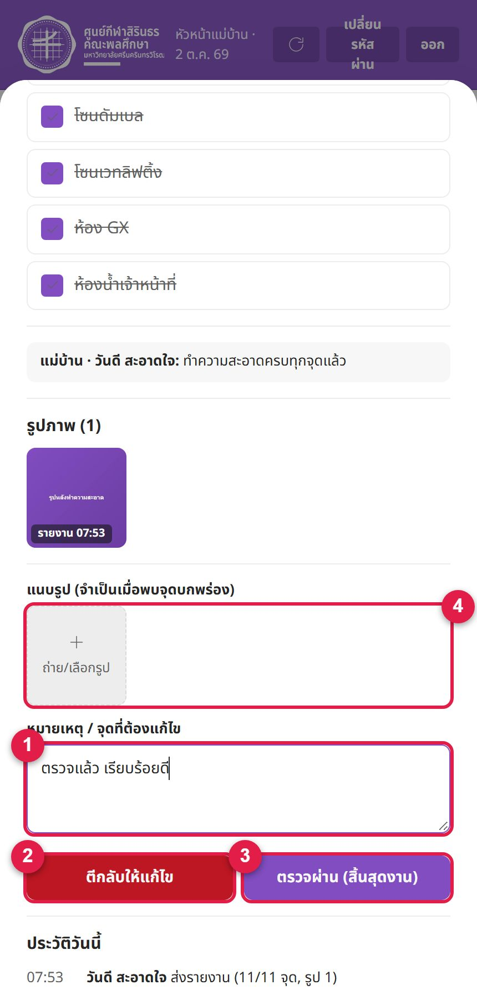
ด้านล่างของหน้าต่างมีช่องบันทึกและปุ่มตัดสิน
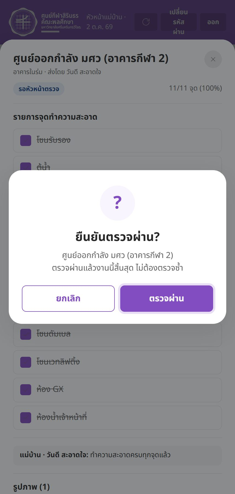
กด ตรวจผ่าน เพื่อยืนยัน พื้นที่จะขึ้นสถานะ ตรวจผ่านแล้ว และงานของพื้นที่นั้นสิ้นสุดทันที
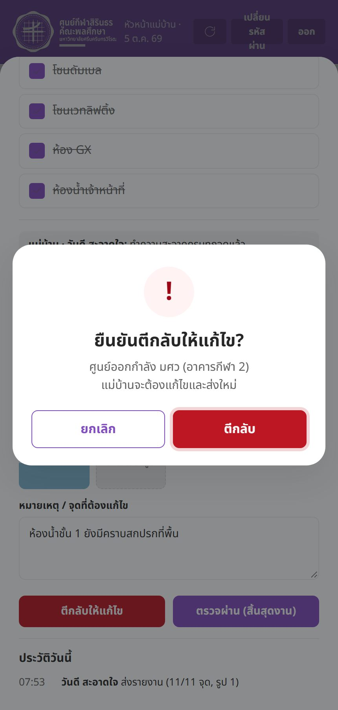
พิมพ์สิ่งที่ต้องแก้ แนบรูปจุดบกพร่อง แล้วกด ตีกลับให้แก้ไข → ยืนยัน พนักงานจะเห็นข้อความของคุณในแท็บแจ้งแก้ไข
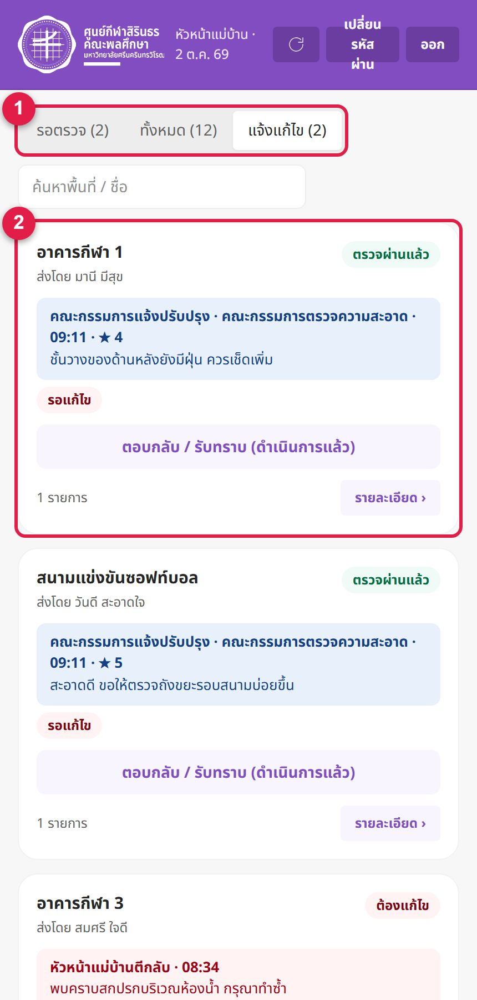
แท็บ 1 รวมเรื่องที่ตีกลับและข้อเสนอแนะของคณะกรรมการ ในการ์ด 2
แจ้งจุดที่ควรปรับปรุง ไม่ต้องอนุมัติงาน
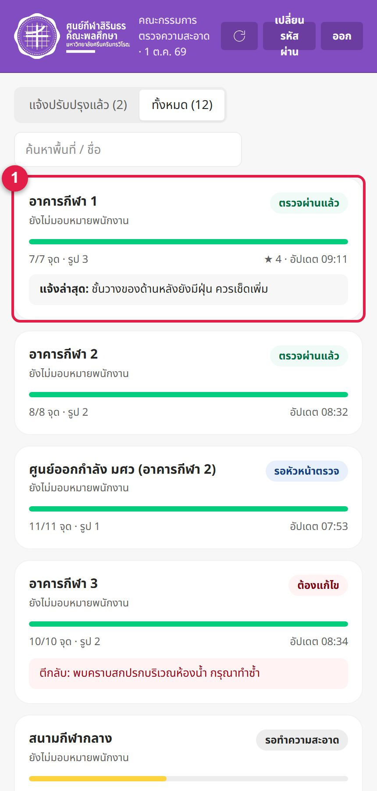
เข้าสู่ระบบแล้วจะเห็นทุกพื้นที่พร้อมสถานะของวัน กดการ์ดพื้นที่ 1 ที่ต้องการแจ้งปรับปรุง
การ์ดที่เคยมีข้อเสนอแนะ จะแสดงคะแนนดาวและข้อความล่าสุดไว้ด้วย
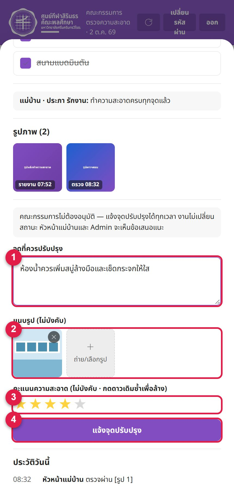
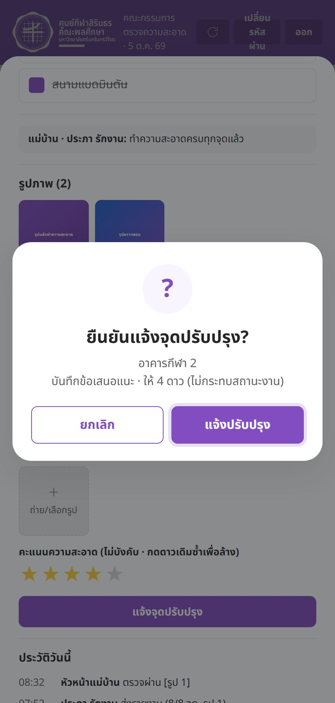
ระบบแสดงสรุปข้อความและคะแนน กด แจ้งปรับปรุง เพื่อยืนยัน
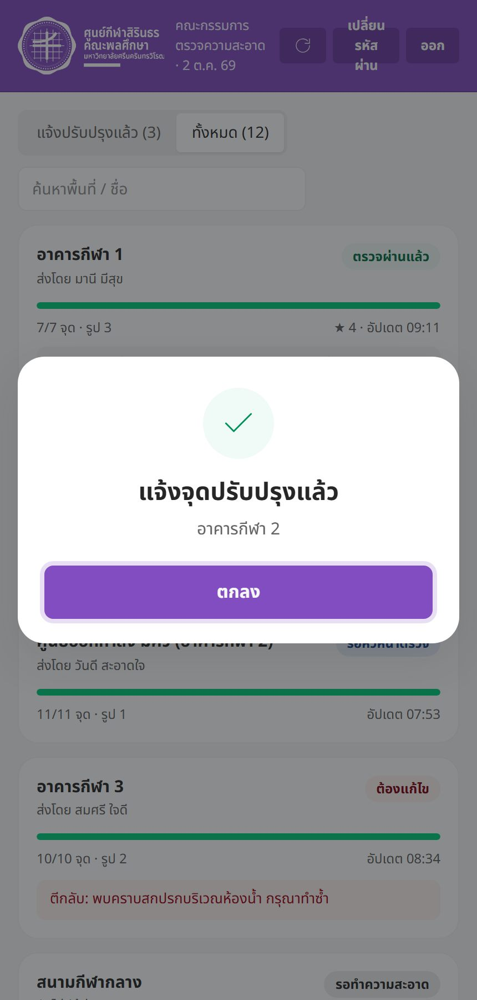
เมื่อขึ้น “แจ้งจุดปรับปรุงแล้ว” ข้อเสนอแนะของคุณจะถูกส่งไปที่แท็บ แจ้งแก้ไข ของพนักงานและหัวหน้าแม่บ้านทันที พร้อมบันทึกประวัติ
บัญชีที่ลงทะเบียนใหม่ต้องให้ผู้ดูแลระบบอนุมัติก่อน ติดต่อผู้ดูแลระบบให้ตรวจรายการลงทะเบียน
ติดต่อผู้ดูแลระบบเพื่อรีเซ็ต ระบบจะให้รหัสชั่วคราว และบังคับให้ตั้งรหัสใหม่ของคุณเองตอนเข้าครั้งแรก
ต้องแนบรูปหลังทำความสะอาดอย่างน้อย 1 รูปก่อนส่ง รออัปโหลดรูปเสร็จ (ไอคอนหมุนหายไป) แล้วกดส่งอีกครั้ง
ผู้ดูแลระบบอาจปิดสิทธิ์บางอย่างชั่วคราว จะมีข้อความแจ้งบนหน้าจอ หากไม่แน่ใจให้ติดต่อผู้ดูแลระบบ
แจ้งหัวหน้าแม่บ้านให้ตีกลับ แล้วแก้ไขและส่งใหม่ผ่านหน้าพื้นที่หรือแท็บแจ้งแก้ไข
กดปุ่ม ออก มุมขวาบน ถ้าเปิดใช้ “จดจำฉัน” การกดออกจะยกเลิกการเข้าอัตโนมัติของเครื่องนั้นด้วย